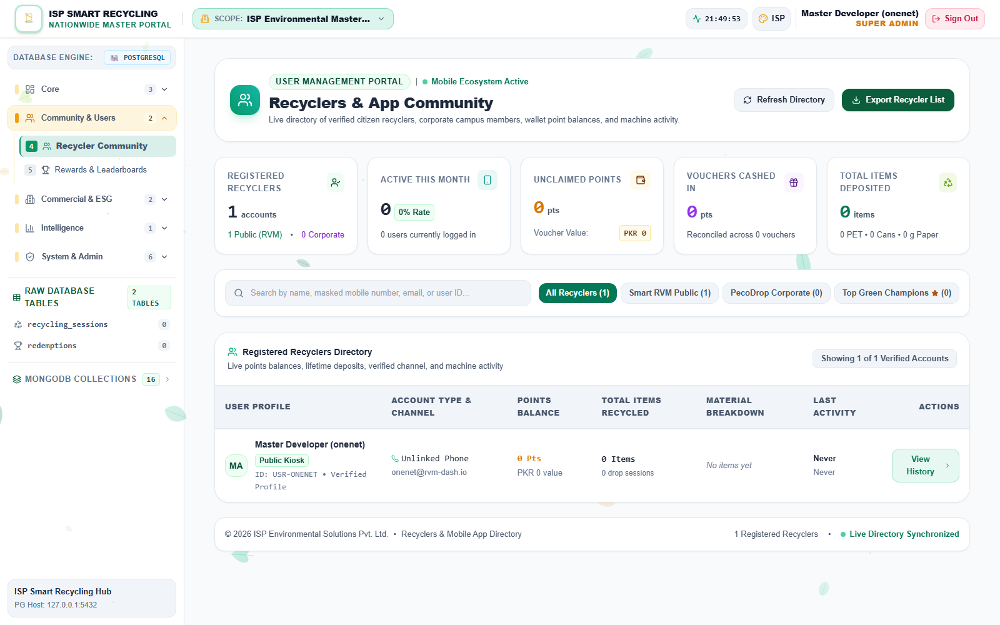
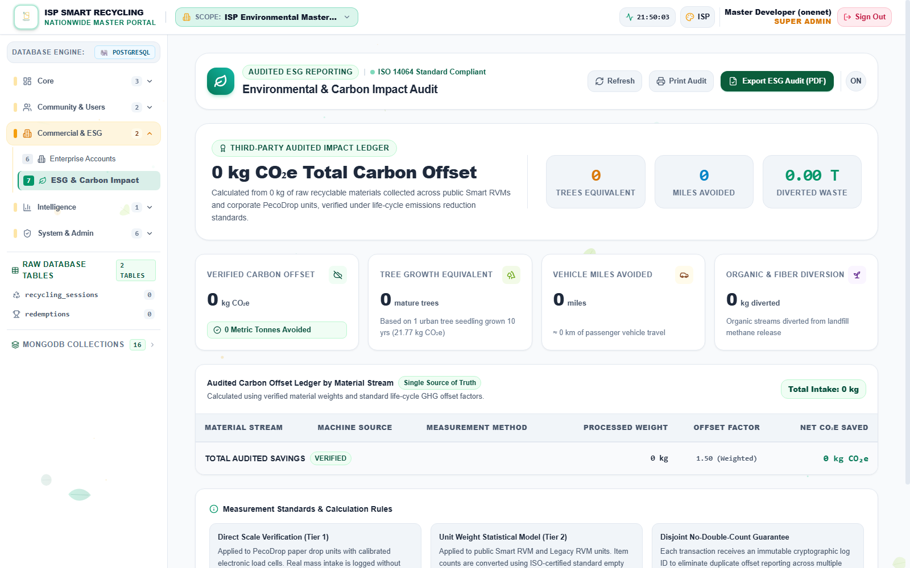
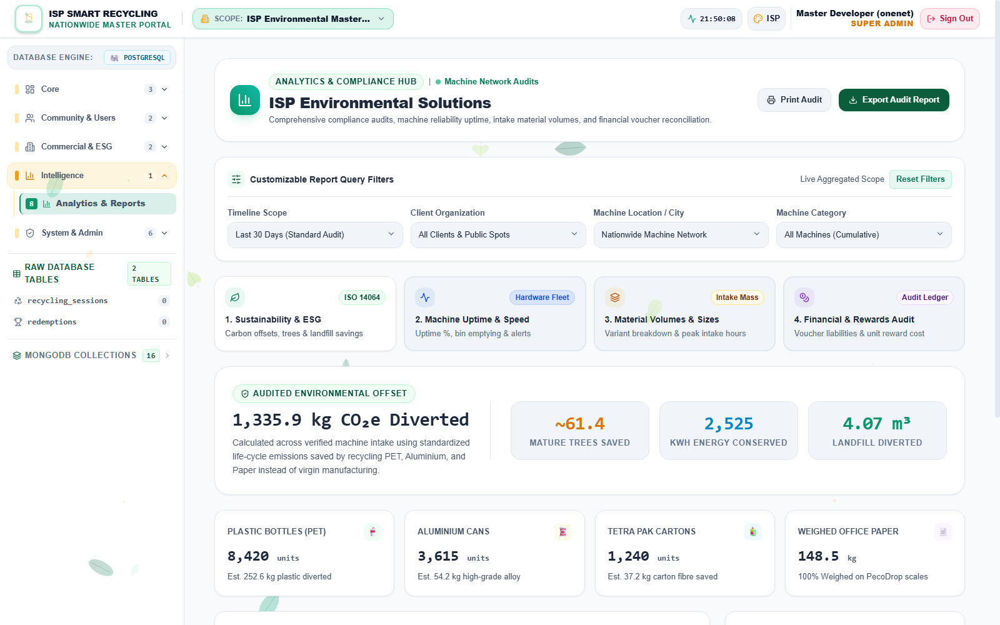

Enterprise PecoDrop and assigned Smart Recycling fleet operations
CORPORATE CLIENT USE
Manufactured and operated by ISP Environmental Solutions Pvt. Ltd. Edition 2026 • Web Dashboard
1. Your portal and access scope
The Corporate Client Portal gives an organization a protected view of its assigned PecoDrop and RVM fleet, recycler/employee activity, rewards, environmental impact and reports. Data from other organizations is not available.
Client Admin
Organization lead. Can view the organization’s fleet and data, manage digital signage and create Corporate Sub-Users with selected machine access.
Corporate Sub-User
Branch, floor or site operator. Can view only explicitly assigned machines and related activity; cannot manage sub-users, security or signage.
Module
Client Admin
Corporate Sub-User
Overview, Machines, Recycler Activity
Yes—own organization
Yes—assigned machines
Rewards, ESG and Reports
Yes
Yes—assigned scope
Digital Signage
Yes
No
Access & Security / Sub-Users
Yes—own organization
No
Enterprise Accounts, raw tables, DB tools/backups
No
No
Scope protection: If a machine, person or site belonging to another organization appears, stop work, take a screenshot without unnecessary personal data, log out and report it to ISP immediately.
2. Login and navigation
Open the ISP portal URL supplied by your authorized administrator.
Sign in with your individual account. Do not share credentials.
Verify your company name/logo and role in the header.
If available, choose a station/machine filter. Sub-users will see only their delegated fleet.
Use Logout when finished.
Corporate Portal — company identity • station filter • theme • logout
Executive Overview
Machine Health & Operations
Recycler Activity
Rewards & Leaderboards
ESG & Carbon Impact
Analytics & Reports
Your organization / assigned fleet
Machines online status
Recycling material total
Impact CO₂/ESG
All cards, charts and exports follow your permitted organization and machine scope.
Navigation reference
Area
Use
Executive Overview
Headline machine, recycling, user and impact indicators.
Machine Health & Operations
Connectivity, status and alerts for permitted machines.
Recycler Activity
Permitted employee/citizen sessions and point/redemption history.
Rewards & Leaderboards
Rankings, points and reward liability within scope.
ESG & Carbon Impact
Environmental indicators and targets.
Analytics & Reports
Filtered operational and ESG reports/exports.
3. Dashboard and machine monitoring
Daily review
Open Executive Overview and confirm selected date/site scope.
Review online/offline machines, recent sessions, material totals and alerts.
Open Machine Health & Operations for any warning.
Record machine ID, installed location, last heartbeat, message and time.
Follow your approved site technician procedure or escalate to ISP.
Machine type
Expected operational data
Enterprise PecoDrop
Corporate employee/department context; plastic, metal/cans and paper weight. Physical kiosk has dual displays, QR scanner/keypad, circle plastic, triangle cans and square paper apertures.
Public RVM assigned to client
Plastic, cans, UBC and reject counts; public user and reward workflow.
Alert response
Condition
Client action
Offline / stale heartbeat
Confirm site power/network and record the last-seen time; do not edit ownership or raw records.
Bin full
Follow the approved machine bin-service guide, then confirm the warning clears.
Repeated rejects or sensor fault
Stop public/employee use if unsafe, preserve evidence and contact the trained technician/ISP.
Incorrect statistics
Check date, site and machine filters; report discrepancy with session/machine references.
Portal limits: The dashboard monitors and manages permitted business functions; it does not authorize opening electrical panels, bypassing safety devices or changing firmware.
4. Client Admin: corporate sub-users
This section applies to Client Admins. Corporate Sub-Users do not have user-management access.
Create a sub-user
Open Access & Security (RBAC).
Select Add/Create Sub-User.
Enter the person’s official name, unique username and approved contact details.
Select only the machines/sites required for their work.
Review the assignment, save, and provide initial credentials securely.
Ask the user to sign in and confirm the correct fleet is visible.
Change or revoke access
Open the user record and compare current machine access with the approved request.
Add/remove only the necessary machines, then save.
For leavers or compromised accounts, revoke/suspend access immediately.
Confirm the user can no longer reach removed machines or restricted functions.
Least privilege: Never assign every machine for convenience. Access must follow branch, floor, site or job responsibility and should be reviewed periodically.
Quarterly access review
□
Every account belongs to an active employee/contractor.
□
Role and assigned machines match current duties.
□
Dormant, shared and duplicate accounts are removed or escalated.
□
Departed personnel have no access.
□
Review evidence is retained according to company policy.
5. Recycler activity, rewards and privacy
Review activity
Open Recycler Activity and select the correct date/site/machine scope.
Search only when there is an authorized operational or support reason.
Compare recycling sessions, earned points, redeemed points and available balance.
Use the redemption history to confirm item, points, code/status and timestamp.
Leaderboard and reward review
Use Rewards & Leaderboards to understand participation and recognize contributors.
Confirm filters before presenting department or site comparisons.
Treat estimated voucher liability as a reporting value, not proof that an external merchant paid or accepted a voucher.
Refer balance, duplicate redemption or payout disputes to the authorized ISP/client administrator.
Voucher note: Vouch365-labelled functions currently include a promotion link and locally recorded voucher references. Do not promise external Vouch365 fulfilment unless ISP confirms that a real provider transaction was completed.
Privacy rules
Access personal information only for a legitimate business purpose.
Do not publish employee names, mobile numbers, email addresses or voucher codes in public leaderboards.
Minimize exported personal data and store reports in approved corporate locations.
Report suspected cross-tenant visibility or data leakage immediately.
6. ESG impact and reporting
Create a reliable report
Select date range→Select site/machines→Review material data→Validate impact→Export/share
Open ESG & Carbon Impact or Analytics & Reports.
Set the reporting period and verify your organization/site filters.
Review total material, item count, sessions, points, CO₂ savings and other displayed ESG indicators.
Compare unusual changes with machine uptime and site events.
Export the report and label it with scope, period, generation date and responsible reviewer.
Interpretation rules
Metric
Check before use
Material weight/count
Machine type, active period, accepted vs rejected material and duplicate sessions.
Participation
Unique users vs total sessions and whether anonymous/public sessions are included.
Points/reward value
Earned vs redeemed points, conversion rule and outstanding liability.
CO₂/environmental impact
Methodology and conversion factors used by the portal; label estimates appropriately.
Management reporting: Use the portal as the operational evidence source, then apply your organization’s ESG assurance and approval process before external publication.
7. Client Admin: digital signage
Digital Signage is available to Client Admins, not Corporate Sub-Users.
Open Digital Signage and review existing campaigns.
Create a campaign with a clear name, approved start/end schedule and audience.
Upload authorized media in the required format and orientation.
Select only your organization’s intended kiosk destinations.
Save, push/publish and verify synchronization at the physical displays.
Expire/remove old campaigns when no longer approved.
Publishing checklist
□
Brand, legal, HR and copyright approval obtained.
□
No confidential, misleading or inappropriate content.
□
Correct PecoDrop/RVM display orientation and readable resolution.
□
Correct machines/sites selected.
□
Start/end time and timezone verified.
□
Physical kiosk playback confirmed.
Do not upload credentials, QR secrets, personal records or internal-only documents as signage media.
Failed campaign
Record campaign name, machine ID, scheduled time and portal status. Confirm the kiosk is online. Retry publishing once if authorized; if it still fails, preserve the evidence and contact ISP rather than repeatedly uploading duplicate campaigns.
8. Troubleshooting and support
Problem
Action
Cannot sign in
Check username, keyboard state and network; use the approved password/account recovery contact. Do not share passwords.
Expected machine missing
Clear filters, confirm with Client Admin, then provide ISP the machine ID and installation location.
Wrong company or unauthorized machine visible
Stop, capture minimal evidence, log out and report as a security incident.
Dashboard totals appear wrong
Verify date/site filters, compare sessions and note exact cards/charts affected.
Export fails
Reduce date range, confirm browser downloads and retry once; report the module/filter set.
Campaign does not reach kiosk
Confirm schedule, destination and machine online state; escalate after one retry.
Support information
□
Company, site, machine ID and your portal role.
□
Date/time and affected module.
□
Exact message and screenshot with personal data minimized.
□
Selected date/client/site filters.
□
Steps already attempted and whether the problem repeats.
Client handover record
Date/time
User
Company/site
Machine(s)
Issue/action
ISP reference
Safe operating rule: If a function is not visible, it is probably outside your assigned role. Do not attempt to bypass portal permissions; contact your Client Admin or ISP.
Visual Guide 1 — Secure login
Actual portal capture
Use your individual corporate account and log out on shared devices.
Account Use issued identity.
Password Never share it.
Identity Confirm company and role.
Visual Guide 2 — Corporate overview
Role-restricted workspace
The workspace is restricted to your organization and assigned machines.
Date Select period.
Model Separate RVM/PecoDrop.
Location Filter branch/site.
Visual Guide 3 — Machine health
Assigned fleet
Record machine ID, location, heartbeat and status before escalation.
Offline Check site power/network.
Bin full Follow service guide.
Unsafe Stop use.
Visual Guide 4 — Recycler activity
Authorized use only

Client accounts see only permitted organization and machine activity.
Search Approved support only.
Reconcile Earned, redeemed, balance.
Privacy Minimize personal data.
Visual Guide 5 — Rewards
Corporate scope
Treat voucher value as liability until external fulfilment is confirmed.
Filters Match site and period.
Identity Protect user details.
Disputes Escalate exceptions.
Visual Guide 6 — ESG impact
Management reporting

Validate inputs, period, uptime and methodology before publication.
Basis Counts/weights vary.
Estimate Label equivalents.
Approval Apply ESG assurance.
Visual Guide 7 — Reports
Filtered exports

State scope, period, timezone, generation date and reviewer.
Scope Set filters first.
Validate Compare uptime.
Share Approved recipients.
Visual Guide 8 — Digital signage
Client Admin only
Use approved media and only assigned corporate kiosk destinations.